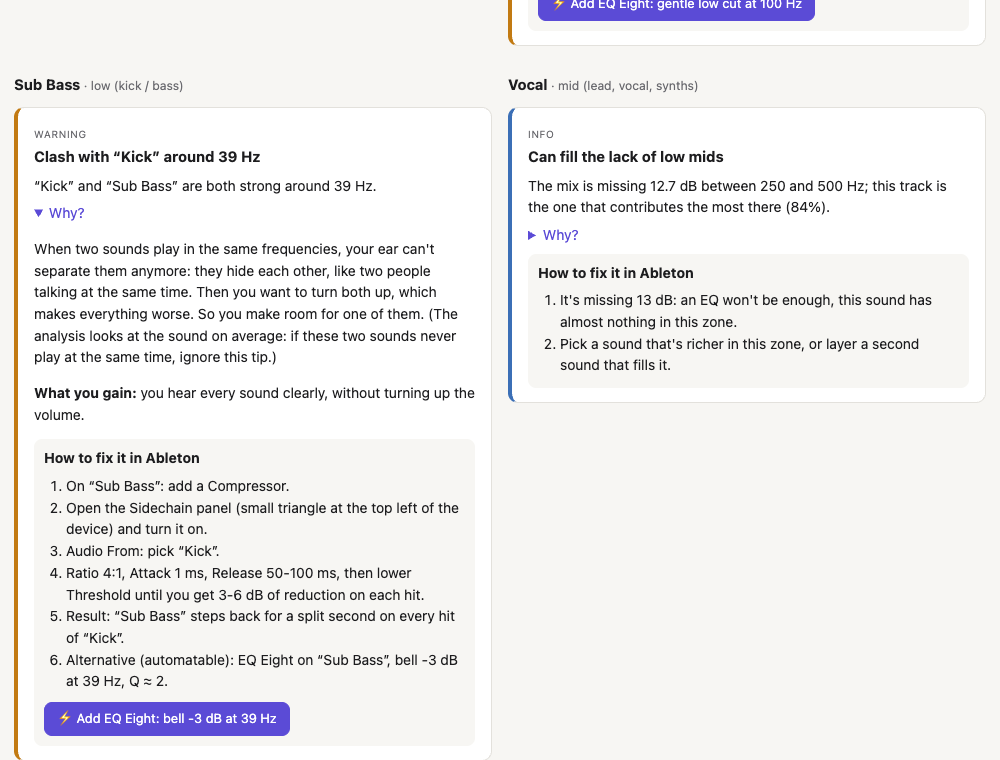
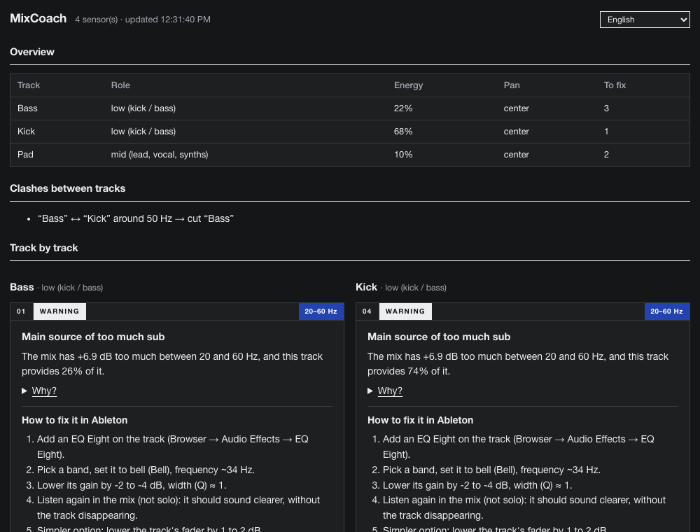

MixCoach listens to every track and tells you, in plain words, what to fix, how to do it in Ableton, and why. No theory needed.
Download MixCoach
Spectrum analyzers show you curves. MixCoach tells you what to do about them.
“The Pad brings 60% of the mud between 250 and 500 Hz: cut it there.” It compares your tracks with each other, not just the master.
Every tip explains why, with everyday images, and what you gain by fixing it.
Recenter a pan, raise a fader, add a well-tuned EQ Eight. Everything is undoable.
Finds sounds fighting for the same frequencies and decides which one should make room.
Headroom, clipping, phase, mono low end, LUFS loudness for streaming or club.
Open source, no account, no server, no online AI. Just math on your sound.

A small sensor on each track, the MixCoach panel on the Master. Press play: in a few seconds you see which track to fix and how. With MixCoach Auto, sensors add themselves.
You need Ableton Live 12 (Suite, or Standard + Max for Live).
~/Music/Ableton/User Library/Presets/Audio Effects/Max Audio Effect/
Documents\Ableton\User Library\Presets\Audio Effects\Max Audio Effect\~/Music/Ableton/User Library/Remote Scripts/Documents\Ableton\User Library\Remote Scripts\,
restart Live and pick MixCoachAuto as a Control Surface (Settings → Link, Tempo & MIDI). Sensors then add themselves.Pick your language in the panel. Ableton device names stay the ones you see in Live.